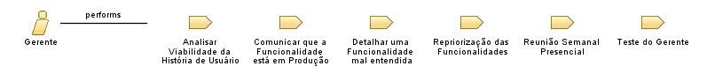

| Role: Gerente |
 |
|
 |
||
| Primary Performs | ||
|---|---|---|
| Additionally Performs | ||
| Modifies |
|
|
Encontra-se pessoalmente com frequência com os Stakeholders (Administradores e Operadores) Organiza reuniões semenais com todos os envolvidos (Stakeholders, Desenvolvedores e ele mesmo), a fim que todos entendam bem o perfil e as necessidade e limitações de cada parte envolvida no projeto Auxília os Stakeholders na criação de histórias de usuário, documentos que mostrarão o que os desenvolvedores precisam implementar ou aperfeiçoar no sistema
Acompanha e auxilia os desenvolvedores, transmitindo as histórias de usuário para eles, tirando dúvidas, e orientando o
progresso do desenvolvimento, definindo suas prioriedades |
Este programa e o material que o acompanha são disponibilizados sob a Copyright © 1998--2008 Mountain Goat Software. Todos os Direitos Reservados. |